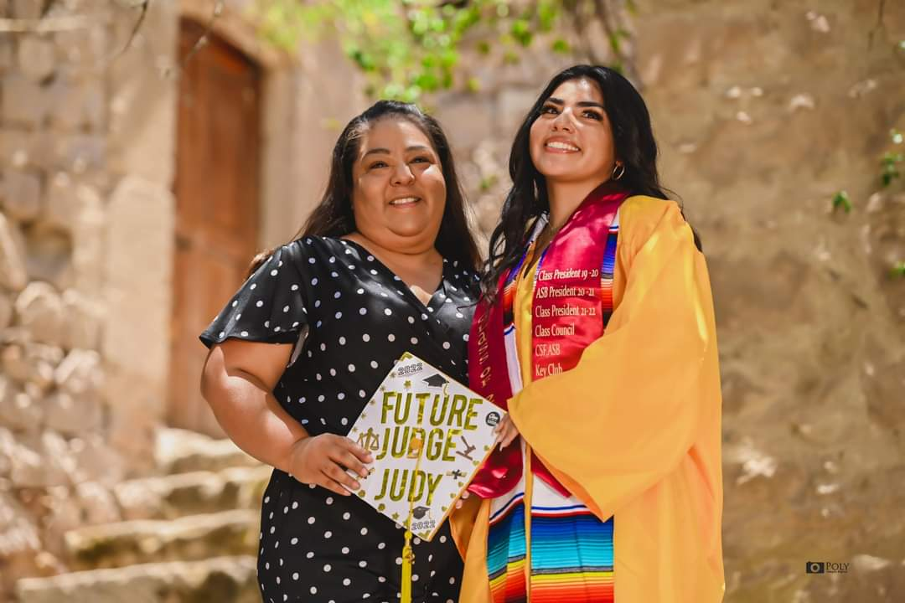
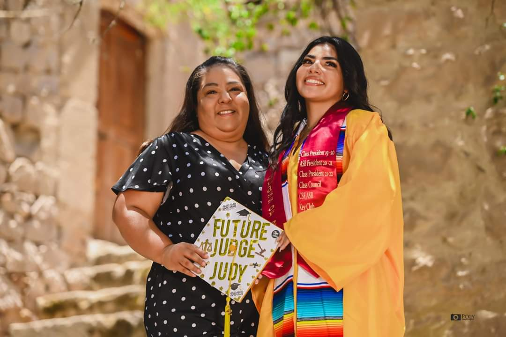
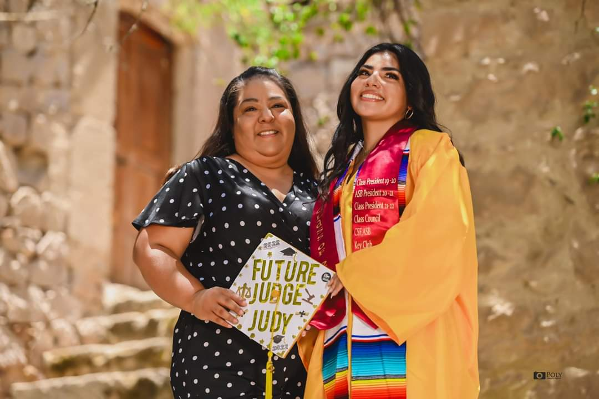

Angelica Arzate
Political Science📚
Hello,
My name is Angelica Arzate, and I am a political science major with a minor in Chicano studies on the three-year path. I should be graduating in the spring of 2025. I have been able to grow at the University of California, Riverside, for the past two years, and I am grateful for the experience. I have spent most of my time commuting but also attempting to build connections to the network for my future job. I would like to pursue a career in law to become an attorney and then go on and open my law firm. I have been big on opening my law firm but was swayed towards corporate. Recently, I have been swayed more towards immigration law. I have also participated in many clubs on campus that are aimed at pre-law students, including Model United Nations, Phi Alpha Delta Pre-Law Fraternity, Associated Students of the University of California Riverside, and the National Society of Leadership and Success. I also studied abroad this past summer, 2023, in Florence, Italy, to study Italian culture and language. I am open-minded about cultures and languages, and I have learned Spanish, American Sign Language, and Italian, hoping to expand my knowledge later.
From my past, I have learned since middle school how invested I have been in government-structured organizations. I was a student board member from seventh grade to eighth grade for my school district. I shared a position with people in their 60s as trusted board members. From this, I could advocate for the students regarding late bus routes, ideal time conflicts, and inability to complete homework. My community is mainly middle class, so only some students could complete homework online. So, as I read my speech to the superintendent, board members, and community, they commended me for bringing up an issue they had never considered. After that, the district awarded each student a take-home computer to make it more accessible, regardless of background. To this day, that instilled confidence in me that people are listening. It's just a matter of confidently bringing the issue to the table.
Leading into high school, I was determined to attempt similar outcomes, but as one is a teenager, you begin to have more doubts and hurdles. I ended up being class president for my sophomore and senior years and was president of the Associated Student bodies in my junior year. ASB tended to have more leverage on completing goals, but unfortunately, it was during COVID, and I could not perform as I hoped. However, during my sophomore year presidency, I created the sophomore senate as only junior and senior senates existed. Still, I believed we all deserved a chance to have something specified for each class. During that year, I created non-stop fundraisers to have enough to plan for the following year, hopefully, but it was during COVID, so the anticipation was unfortunately not met. But I came back in my senior year with a different plan to hopefully recover us all from the depths we were left in. I was consistently presenting informed about my senior class and planning every second of my day how we could make the year memorable. While doing that, I was also on cheer varsity all four years of highschool again, trying to implement school spirit, which led me to where I am now with University on the fast track of three years to then follow up with law school and keep building my future.
Experience
Phi Alpha Delta Pre Law Fraternity
• member since fall 2022
• legal experience
• networking
ASUCR Fellowship
• Ran meetings for committee
• Emailed any communication outwards
• Planned events for first year students and bonding among committee
• Attended meetings and took notes
Education
UC Riverside
Portfolio
 


